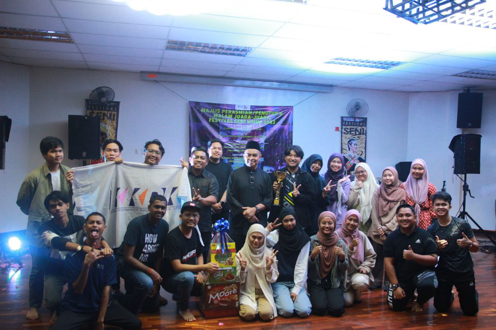
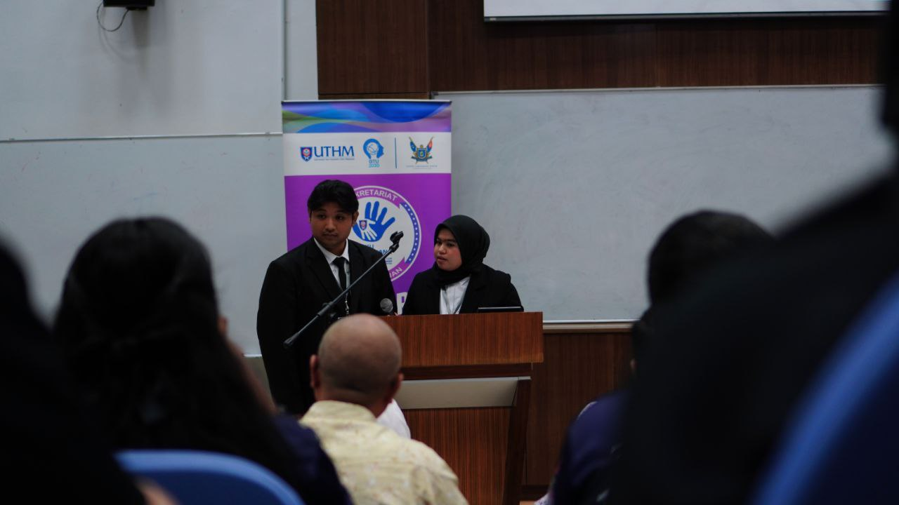
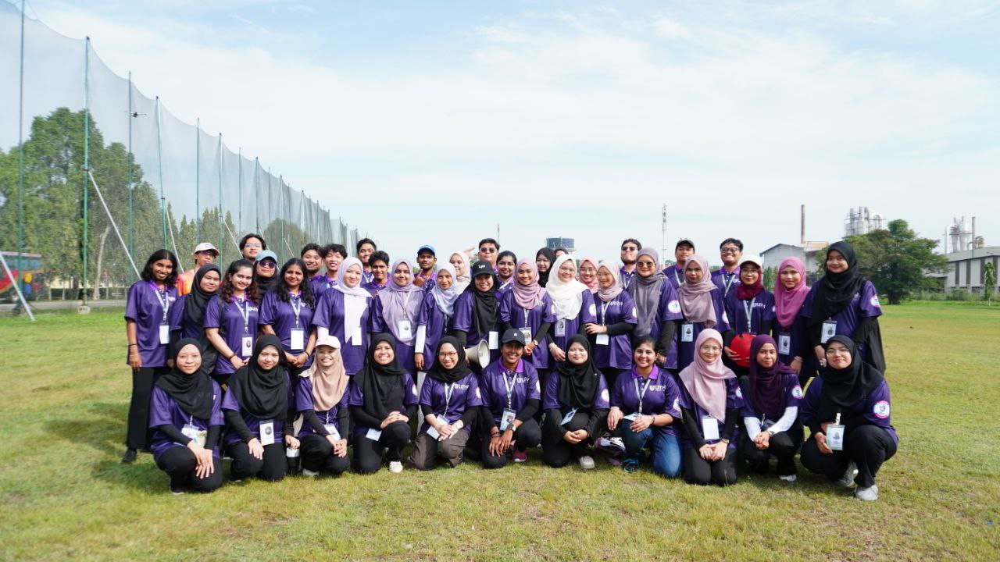

My Campus Life in UTHM
TheatreTheatre has been one of the most unexpected and rewarding paths in my life. My journey began during the Minggu Haluan Siswa (MHS) in 2022/23, where I had no prior experience but found myself drawn to the stage. To my surprise, I won 1st place in the competition, which ignited my passion for performing. Since then, I have continued to pursue theatre, participating in the Festival Seni in both 2022/23 and 2023/24, as well as MAKUM—the largest theatre festival in Malaysia, which involves universities from across the nation. Each experience has deepened my love for the art and challenged me to grow as a performer. |
 |
EmceeMy journey as an emcee began unexpectedly when I had the opportunity to host a significant event: the "Majlis Tandatangan Memorandum Persefahaman" between the campus residential colleges and Anjung Technology Sdn Bhd in 2023. This was my first experience in this role, and it allowed me to showcase my abilities in front of a large audience. Shortly after, I had the privilege of emceeing for the second time at the "Majlis Kesedaran Kanser," which took place just two weeks ago. These experiences not only honed my public speaking skills but also instilled in me a deeper confidence in engaging with diverse audiences. |
 |
OrganisationBelieve it or not, my journey at UTHM has ignited a newfound passion for activity and involvement. I began my organizational leadership experience as a member of the Majlis Kepimpinan Pelajar (MKP KKDK), specifically in the Exco Akademik dan Inovasi. Once my term concluded, I actively participated in various programs both within and outside UTHM. This engagement not only helped me build valuable networks but also prepared me for my future career. |
 |